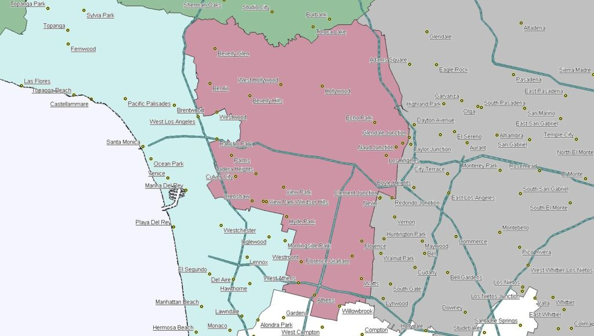
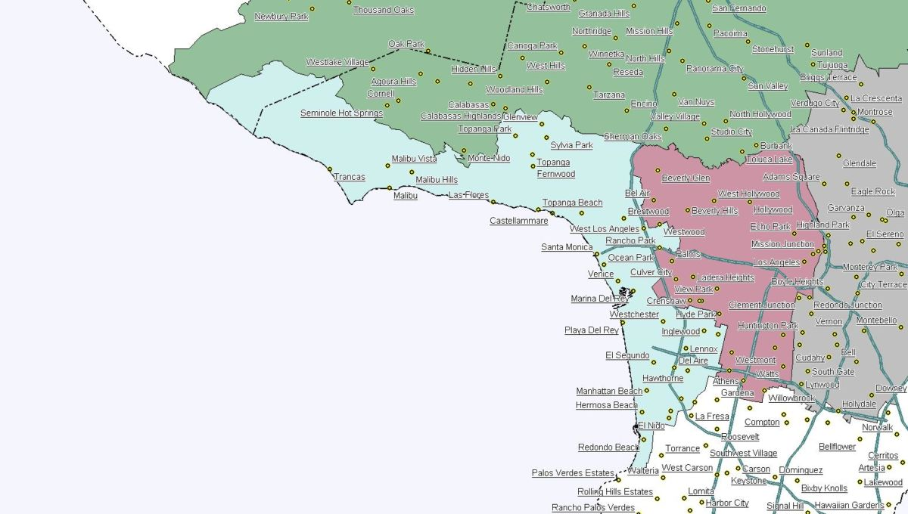
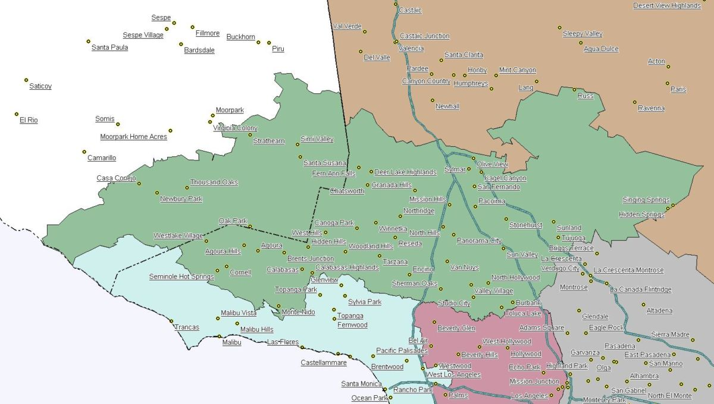
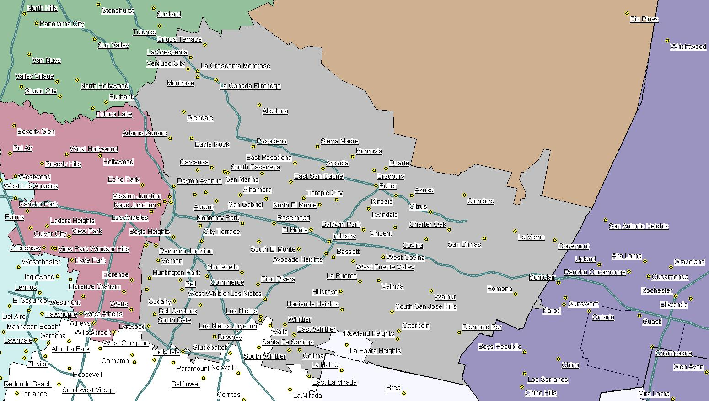
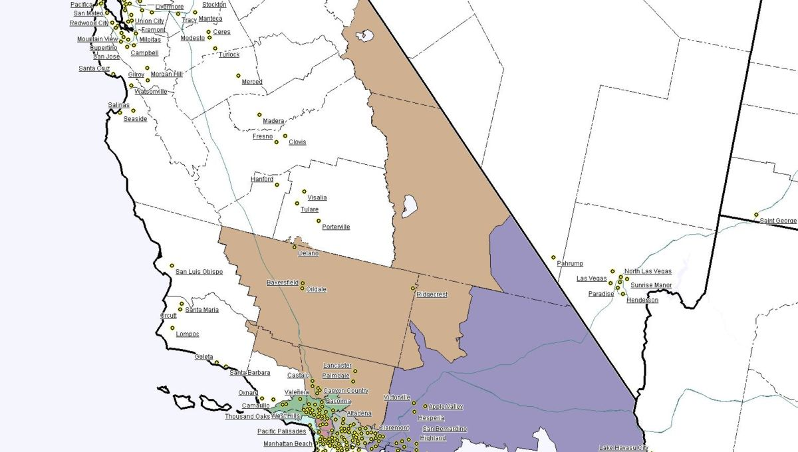
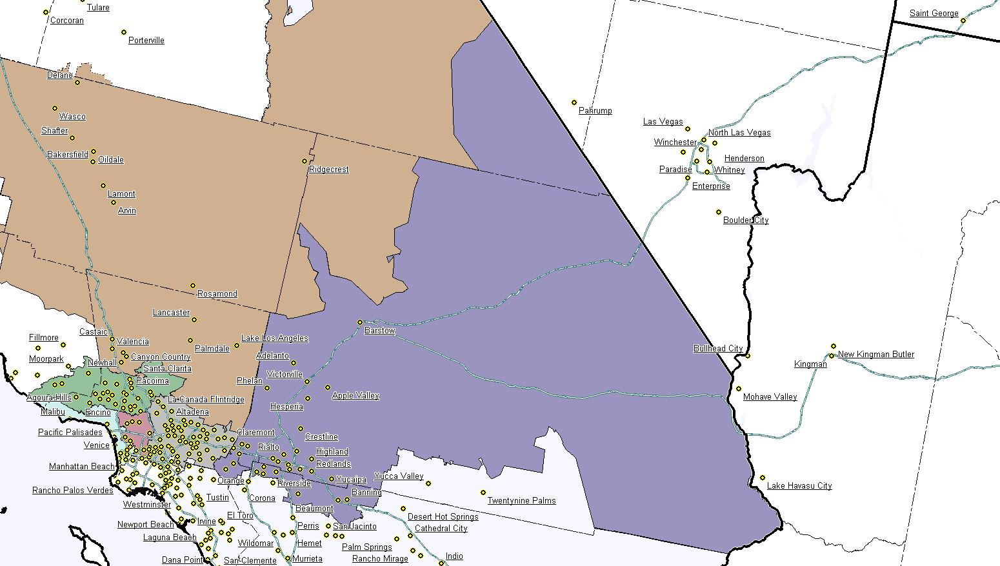

Mid-City (MCity)
The core of Los Angeles, spanning downtown and surrounding urban communities.
Area Secretary: Helena Rowe
Area Delegate: Yvonne Carrick
GLAAM is divided into six geographic subgroups so we can hold local events while sharing chapter resources. Each area has a Secretary and a Delegate on the board.

The core of Los Angeles, spanning downtown and surrounding urban communities.
Area Secretary: Helena Rowe
Area Delegate: Yvonne Carrick

Beach cities along the western edge of the region.
Area Secretary: Seiuli Fa’auliulito H. Meni
Area Delegate: Vacant

Members north of the Hollywood Hills.
Area Secretary: Christopher Persaud
Area Delegate: Jana Bickel

Communities east of the Los Angeles River.
Area Secretary: Anrey Wang
Area Delegate: Käto Cooks

Our northern territory, including the high desert.
Area Secretary: Jennifer Prewitt
Area Delegate: Craig Lancaster

Eastward suburban and metropolitan communities.
Area Secretary: Mark Carpenter
Area Delegate: Wilbert Woo
By 1967 the Los Angeles group had grown into eleven subgroups. Over time some split off to form their own chapters. GLAAM reorganized into six subgroups in 1993, which is close to the structure we use today.